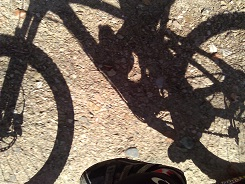

Jura Park Peak Catching Challenge 2014
"Catches" Blog
09.03.2014
 Erster Catch mit dem Bike, in der Sonne und die Ruine Schenkenberg als AAA-Kinderspielplatz entdeckt!
02.03.2014 Kick-Off zu Fuss über vier "Chöttiger"
Kick-Off zu Fuss über vier "Chöttiger"
24.02.2014 Am Samstag gehts los!
Aktueller Stand
09.03.2014 20:08
Peaks catched: 6 (9%)
Peaks to catch: 59 (91%)
Regeln
Als Berge zählen alle topografischen Erhebungen welche über 500 m.ü.M. liegen und auf der Landeskarte benannt sind.
Jeder Catch erfolgt von zu Hause aus und ohne fremde Verkehrsmittel. Als fremd gilt alles was nicht zu Fuss oder per Velo bewegt wird.
Der Challenge endet am 31.10.2014 24:00 Uhr.